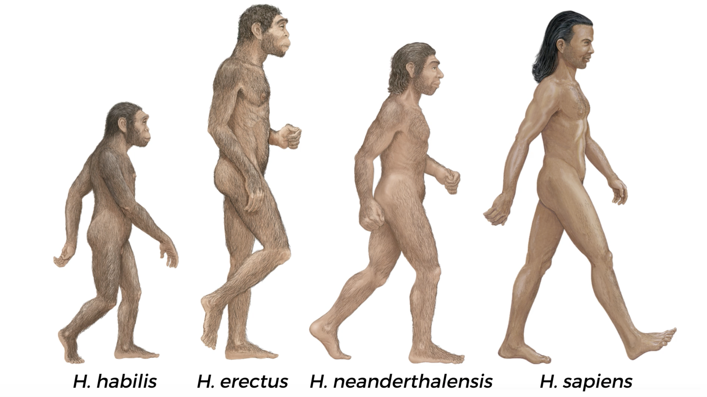

Basic History
SARA शिक्षा ⋅ Free ⋅ Online ⋅ Open to All
November 1, 2026
Welcome
Title slide background image source: krakograff on unsplash
SARA
Intro
Savitribai Phule (1831-1897)
🪷🙏🏽🪷
Ramabai Ambedkar (1898-1935)
🪷🙏🏽🪷
Savitribai Ramabai (SARA) Institute of Data Science, Sonipat
About SARA
Education for everyone
Est. April 2023
Free1, open-source and inclusive education
SARA Data Schools
Non-profit events \(\cdot\) Offline \(\cdot\) Sonipat (HR)
SARA Summer School “R for Researchers”
SARA Winter School “Statistics using R”
SARA March Bootcamp “Publish using Quarto”
Bridge Courses
Free \(\cdot\) Online \(\cdot\) Open to all
Live on SARA YouTube Channel
For first-generation learners.
Essential subjects
Donate to SARA
Account Name: SARA EDUCATION TRUST
Account Number:
42920911856Bank Name: STATE BANK OF INDIA
IFSC Code:
SBIN0000721
SARA Library
40 Books for Bridge Course Level 1
Link: https://sara-edu.netlify.app/book-club/books-donation/sara_book_donations
Contact SARA
SARA Institute
Dr. Ambedkar Bhavan
Near Dayanand Hospital
Kakroi Road, Sonipat
Haryana - 131001, India
Google Map Link: https://maps.app.goo.gl/d9S6a3pEFNXhnJGN6
Basic
History
About Author
Yuval Noah Harari
PhD from the University of Oxford
His books sold 55 million copies in 65 languages
Image source: X Yuval Noah Harari
The Timeline of History
The Timeline of History
13.8 billion years ago
Matter and energy appear. Beginning of physics. Formation of atoms and molecules. Beginning of chemistry.
The Timeline of History
4.5 billion years ago
Formation of planet Earth.
The Timeline of History
3.8 billion years ago
Emergence of organisms. Beginning of biology.
The Timeline of History
6 million years ago
Last common grandmother of humans and chimpanzees.
The Timeline of History
2.5 million years ago
Humans evolve in Africa. Ue of stone tools.
The Timeline of History
2 million years ago
Humans spread from Africa to Eurasia. Evolution of different human species.
The Timeline of History
4,00,000 years ago
Neanderthals evolve in Europe and the Middle East. Regular use of fire.
Neanderthals “cousin” of Homo sapiens

Source: Screenshot of video from Britannica Digital Studios
The Timeline of History
70,000 years ago
The Cognitive Revolution. Emergence of storytelling. Beginning of history. Sapiens spread out of Africa.
The Timeline of History
50,000 years ago
Sapiens settle across Australia. Extinction of Australian megafauna.

Image source: The Guardian
The Timeline of History
30,000 years ago
Extinction of Neanderthals. Homo sapiens the only surviving human species.
15,000 years ago
Sapiens spread across Americas. Extinction of American megafauna.
The Timeline of History
12,000 years ago
The Agricultural Revolution. Domestication of plants and animals. Permanent settlements.
The Timeline of History
5,000 years ago
First kingdoms, script and money. Polytheistic religions.
The Timeline of History
4250 years ago
First empire - the Akkadian1 Empire of Sargon2
Image source: Britannica
The Timeline of History
2500 years ago
Invention of coins - a universal money.
The Persian Empire - a universal political order.
Buddhism in India - a universal teaching.
Image source: Encyclopedia Britannica
The Timeline of History
2000 years ago
Han Empire in China. Roman Empire in the Mediterranean. Christianity.
1400 year ago
Islam
The Timeline of History
500 years ago
The Scientific Revolution
Humankind admits its ignorance and begins to acquire unprecedented power.
Europeans begin to conquer America and the oceans.
The entire planet becomes a single historical arena.
The rise of capitalism (पूंजीवाद).
The Timeline of History
200 years ago
The Industrial Revolution (औद्योगिक क्रांति).
Family and community are replaced by state and market.
Massive extinction of plants and animals.
The Present
Humans transcend the boundaries of planet Earth.
Nuclear weapons threaten the survival of humankind.
Organisms are increasingly shaped by intelligent design rather than natural selection.
Part One
The COGNITIVE REVOLUTION
Image source: Nellie Cole
A human handprint made about 30,000 years ago, on the wall of the Chauvet-Pont-d’Arc Cave in southern France. Somebody tried to say, “I was here!”

1
An Animal of No Significance
An Animal of No Significance
Physics: Big Bang, around 14 billion years ago, creation of time, space, energy, & matter.
Chemistry: around 300,000 years later, atoms (matter + energy); molecules (atom + atom).
Biology: around 4 billion years ago, organisms (molecules + molecules)
History: around 70,000 years ago, Homo sapiens created cultures.
The course of history
The Cognitive Revolution, started around 70,000 years ago.
The Agricultural Revolution, around 12,000 years ago.
The Scientific Revolution, around 500 years ago … on going now.
An Animal of No Significance
“in East Africa 2 million years ago”
“humans loved, played, formed close friendships and competed for status and power - but so did chimpanzees, baboons and elephants. There was nothing special about humans.”
“The most important thing to know about prehistoric humans is that they were insignificant animals with no more impact on their environment than gorillas, fireflies or jellyfish.” (p. 4)
An Animal of No Significance
Homo (genus) sapiens (species)
“we are members of a large and particularly noisy family called the great ape. … The chimpanzees are the closest.” (p. 5)
“there used to be many other species of this genus besides Homo sapiens.” (p. 6)
Skeletons in the Closet
“Homo sapiens is the only human species on earth from last 10,000 years.”
First human evolved in East Africa (Cradle of Humanity) around 2.5 million years algo.
About 2 million years ago they moved & settled in North Africa, Europe & Asia.
Skeletons in the Closet
Neanderthals more adapted to Ice Age western Eurasia.
The most durable human species Homo erectus survived to 2 million years lived in eastern Asia.
The earth once walked by at least six species of man.
The Cost of Thinking
humans have extraordinarily large brains 1200-1400 cubic centimeters
Human brain weight about 2-3 per cent of body weight but it consumes 25 per cent of body’s energy … in other apes only 8 per cent of body energy.
Spent more time in searching food and muscle atrophied (diverted energy from biceps to neurons)
The Cost of Thinking
singular human trait is that we walk upright on two legs
finely tuned muscles in the palms and fingers … perform very intricate tasks with their hands.
backaches and stiff necks … death in childbirth became a major hazard for human females
Raising children required constant help from other family members and neighbors … evolution thus favoured those capable of forming strong social ties.
A Race of Cooks
Use of fire as early as 800,000 years ago
The best thing fire did was cooking.
Fire stick could burn down an entire forest in a matter of hours.
Our Brothers’ Keepers
1,50,000 years ago, East Africa was populated by Sapiens that looked just like us. … 70,000 years ago, Sapiens started spreading
The Interbreeding Theory
The Replacement Theory
2
The Tree of Knowledge
The Tree of Knowledge
1,50,000 years ago Sapiens lived in East Africa.
Around 70,000 years ago, we made the extinction of all other human species & started doing very special things:
Reached Middle East, Europe & East Asia.
Around 45,000 years ago, crossed sea and being first to reach Australia.
The Tree of Knowledge
70,000 to 30,000 years ago we invented:
Boats, oil lamps, bow & arrows, needles
First art object, Stadel Lion man
First evidence for religion, commerce &
social stratification
The Tree of Knowledge
Revolution in Cognitive abilities of Sapiens
1,50,000 years ago
Humans were not very smart
70,000 - 30,000 years ago
Humans were equally smart as we are today
Reason is accidental genetic mutations.
The Tree of Knowledge
Sapien’s language is amazingly supple.
We can explain things a lot more in detail than other animals.
Gossip theory: we talk about other human beings. “primarily a social animal. Social cooperation is our key for survival & reproduction” (p. 26)
Cognitive revolution: “the ability to speak about fictions is the most unique feature of sapien’s language” & myths.
The Legend of Peugeot
“Large numbers of strangers can cooperate successfully by believing in common myths.” (p. 30)
“There are no gods in the universe, no nations, no money, no human rights, no laws and no justice outside the common imagination of human beings” (p. 31)
“a figment of our collective imagination. Lawyers call this a ‘legal fiction’.” (p. 32)
The Legend of Peugeot
“Telling effective stories is not easy. … Yet when it succeeds, it gives Sapiens immense power, because it enables millions of strangers to cooperate and work towards common goals.” (p. 35)
‘fictions’, ‘social constructs’ or ‘imagined realities’ … An imagined reality is not a lie. (p. 35)
“As time went by, the imagined reality became ever more powerful, so that today the very survival of rivers, trees and lions (objective realities) depends on the grace of imagined entities such as the United States and Google” (p. 36)
Bypassing the Genome
“large scale human cooperation is based on myths, the way people cooperate can be altered by chanding the myths” (p. 36)
We have huge ability to cooperate by changing myths as per changing needs.

Social Media